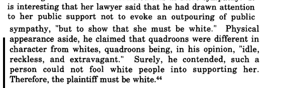

| This case of a light skinned woman who sued for her freedom is especially fascinating to me because of the defendant, a planter by the name of John F. Miller. He was one of the traffickers who held my 3 and 2x great grandmothers Charlotte Gillis, and Ann Randolph, captive. In the 1840s Sally Muller was recognized by fellow German immigrants 20 years after her disappearance and they convinced the Louisiana supreme court of her identity. The argument they used is painful to read. |
|  |
|
Their decision in Miller v. Belmonti (1845 La) included the following
statement: That on the law of slavery in the case of a person visibly appearing to be a white man, or an Indian, the presumption is he is free, and it is necessary for his adversity to show that he is a slave. The supreme court justices who overturned the case and freed Sally, were ousted in short order by angry traffickers. "It was an unpopular decision in a time and place where many slaves were mixed race and appeared to be "white". in March 1846 the Louisiana State Constitutional Convention abolished the Supreme Court, ending Martin's career as a jurist. When the Convention reconstituted the court the following day, it did not reappoint Martin or his fellow five justices. |
|
agt:3Jun2024 References 1) Sally Muller, the White Slave, Carol Wilson, Louisiana History: The Journal of the Louisiana Historical Association Vol. 40, No. 2 (Spring, 1999), pp. 133-153 https://www.jstor.org/stable/4233569 2) https://en.wikipedia.org/wiki/Francois_Xavier_Martin 3) A planter and the courts in antebellum Louisiana:the case of John Miller https://esploro.libs.uga.edu/esploro/outputs/9949334771502959 |